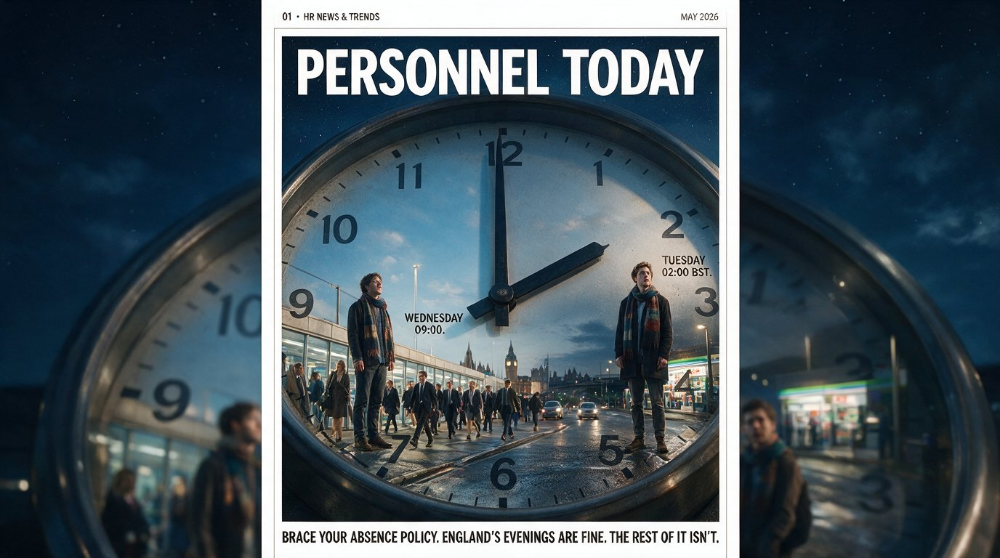
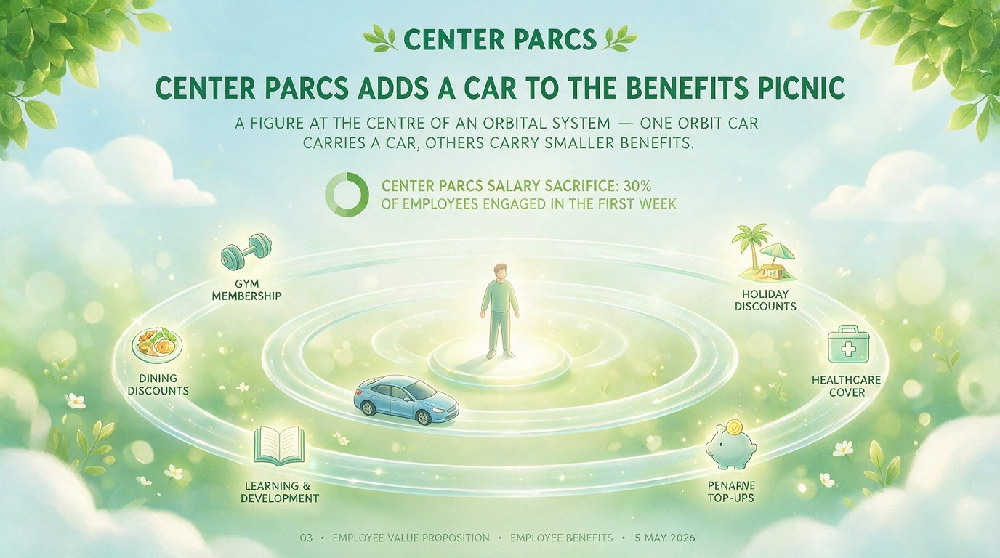
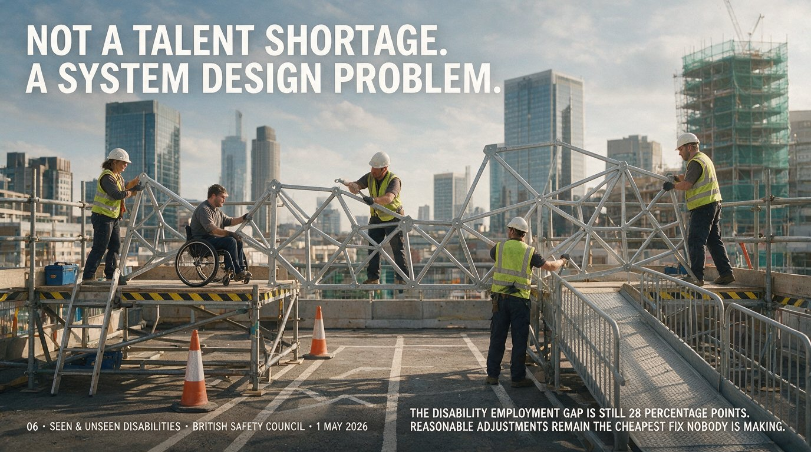

Book a Call with Neil
Book a Call with NeilThe Loud
Speaker.
Six UK HR and recruitment stories worth reading this month. A recruiter needed for the Orkney Islands. Center Parcs hitting 30% benefit engagement in a week. The UK passing 8 million mental health sick days. And flexible working refusals up 109%.
The Loudspeaker · May 2026 · Edition 01 · Neil Copping
00from the editor.
HR newsletters have a bad habit. They reach for the same five stories, the same five buzzwords and the same five photos of people laughing at laptops. The Loudspeaker is the one that goes looking elsewhere.
Each month I comb the British press for the stories that actually moved the needle, plus a few quietly brilliant ones the bigger publications missed.
In this opening edition: a recruiter who needs to fill a role on a windswept Orkney reserve, a salary sacrifice scheme launched at a holiday park that hit 30 per cent engagement in a week and research showing single parents in the UK are now twice as likely to be refused flexible working as they were a year ago. There is also the small matter of 8 million sick days and a football tournament that is about to test every absence policy in the country.
The brief is simple. Useful, current, properly British and never dull.

Tuesday 02:00 BST. Wednesday 09:00. Same scarf, different energy.
Brace your absence policy. England’s evenings are fine. The rest of it isn’t.
The 2026 FIFA World Cup runs across the United States, Canada and Mexico. England’s Group L fixtures land in UK-friendly evening slots: Croatia on 17 June at 21:00 BST, Ghana on 23 June at 21:00 and Panama on 27 June at 22:00. Scotland fans are less fortunate, with their opener against Haiti at 02:00 BST.
One projection from William Hill, extrapolating from CIPD and ONS data, puts the potential cost to UK productivity at over 650,000 sick days and £1.4 billion. The knockout rounds promise the worst of it, with West Coast US and Mexico fixtures running from midnight to 05:00 BST.
The cheapest absence policy this summer is the one you write before the tournament starts, not the one you defend after it. Flex the early mornings now, make the rules clear now and you’ll spend the summer being thanked rather than resented.
Wanted: one warden, eight reserves, seventy-something islands.
The RSPB is recruiting an Assistant Warden for its Orkney reserves, an archipelago of more than 70 islands off the north coast of Scotland. The successful applicant will look after eight mainland reserves spanning upland moors, peatland, lowland wetlands, meadows and seabird cliffs.
Wildlife surveys, chainsaws, hen harriers and lone working all feature in the job description. The salary is modest, the commute is biblical and the office view is unbeatable. A useful reminder that the most appealing roles are not always in London.

Center Parcs salary sacrifice: 30% of employees engaged in the first week.
Center Parcs adds a car to the benefits picnic.
The British holiday parks operator has launched a car salary sacrifice scheme with Tusker, available to staff at head office and across its forest sites from Sherwood to Whinfell. The numbers are quietly remarkable: within a week of launch, 30 per cent of employees had logged in to look at the scheme, with 19 vehicle orders placed almost immediately.
The lesson for HR teams thinking about EVP: a benefit only counts if employees actually engage with it. The four-weekly payroll quirk that often kills these schemes can be solved by choosing the right provider.
By Thursday of Mental Health Awareness Week, the UK had hit 8 million mental health sick days for the year.
Simplyhealth crunched the figures and timed the announcement for Mental Health Awareness Week 2026. The 92nd working day of the year was the moment the UK passed 8,036,364 sick days lost to mental ill health in 2026 alone. Younger workers are carrying a disproportionate share: two in five 18 to 24-year-olds have taken time off because of stress-related poor mental health.
The Mental Health UK Burnout Report, published in parallel, found just one in four workers feel mental health is genuinely prioritised in their workplace. Awareness is doing its job. Support is not.
Single parents are now more than twice as likely to be refused flexible working.
New research from Pregnant Then Screwed, polling 5,245 women between December 2025 and February 2026, lands a serious blow to anyone still describing flexible working as a perk. Refusals of flexible working requests from single parents have risen by 109 per cent. Among parents with a disability, 10 per cent eventually leave work altogether after a refused request.
The headline finding for HR: the way requests are handled has become a major retention risk. When HR leads on clear processes, proper documentation and upfront flexibility, requests stop being a lottery and parents finally get a system they can rely on.

Not a talent shortage. A system design problem.
The disability employment gap is still 28 percentage points. Reasonable adjustments remain the cheapest fix nobody is making.
Grant Tickle and Dr Audrey Fleming, writing for the British Safety Council, argue that as AI takes on a larger role in recruitment, the importance of reasonable adjustments has not diminished. If anything, it has grown.
The piece pairs neatly with the Business Disability Forum’s Disability Smart Impact Awards 2026, where smaller organisations such as Curiously Divergent were shortlisted alongside the BBC and KPMG for redesigning recruitment around neurodivergent candidates rather than neurotypical defaults. The shared lesson is bracing in its simplicity: this is not a talent shortage, it is a system design problem. About one in five UK adults has a disability and roughly 70 to 80 per cent of those disabilities are not visible.
01six stories. one mood. caution.
Read these six pieces back to back and a theme comes into focus. The UK labour market has run out of confidence. Vacancies are at their lowest since 2021. Single-parent flexible working refusals have more than doubled. Mental health absence broke 8 million sick days by the third week of May. Employers are quietly bracing for football sickies at 2am. None of those things happen in a market where employers feel in control.
But there is a flip side and it is the part HR teams should be paying attention to. The bright spots in this edition share one pattern. They are not generic. They are specific.
Center Parcs did not launch a benefit, they launched the benefit their workforce actually wanted and got 30 per cent engagement in a week. E.On did not announce parental leave, they wrote a policy that recognises adoptive parents, same-sex partners, kinship carers and biological fathers as equally deserving of paid time off. Curiously Divergent, a fraction the size of the BBC and KPMG it shares a Disability Smart shortlist with, did not redesign recruitment for neurodivergent candidates as a side project. They redesigned it from scratch.
The single parents finding is the one I cannot stop thinking about. A 109 per cent rise in flexible working refusals in twelve months is not a drift. It is a decision, repeated thousands of times, by thousands of managers. Pregnant Then Screwed are right to name it. If your organisation runs flexible working as a manager-by-manager lottery, you are not running it. You are tolerating its absence.
And on the World Cup: the good news is England’s three group fixtures are in UK prime time, so Tuesday and Wednesday mornings should hold up. The risk sits in the knockout rounds, the Scotland v Haiti opener at 02:00 and the West Coast US and Mexico fixtures running to 05:00 BST. Flex those nights now, make the rules clear now and you’ll spend the summer being thanked rather than resented.
One last thing. The RSPB job on Orkney. Look. Just apply. You know you want to.
02also worth knowing.
Axa UK launches a domestic abuse support fund.
The insurer has rolled out a one-off internal payment, funded by Axa, to help employees experiencing domestic abuse with the immediate costs of leaving an unsafe situation. Trusted contacts inside HR coordinate requests confidentially, with payment delivered through payroll.
E.On enhances family-friendly benefits.
The energy supplier has expanded its Family Start Time initiative to give eligible biological fathers, female partners, non-biological fathers, same-sex partners and adoptive or foster parents four weeks of fully paid leave to support a new child.
The Parental Fog Index is now live.
Working Families and The Executive Coaching Consultancy have launched a new benchmark assessing how transparent UK employers are about their family-friendly policies during recruitment. If your careers page is vague, expect to be measured.
03the shortlist for next month.
Edition 02 · June 2026.
- The full impact of the Employment Rights Act 2025 changes coming in October
- Whether AI in recruitment is closing or widening the disability employment gap
- The Bensons for Beds and Kraft Heinz nominations at the Employee Benefits Awards
- What the Working Families Best Practice Awards 2026 shortlist tells us about real flexibility
Subscribe on LinkedIn to get every edition first, on the last Friday of the month.
Subscribe on LinkedIn → Subscribe to The Dispatch by email →